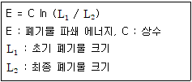
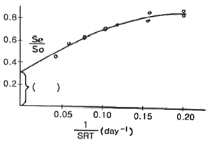
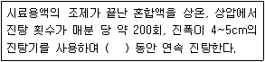
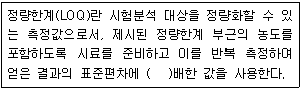
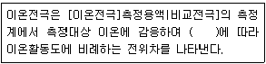
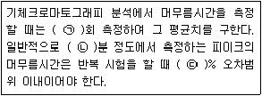
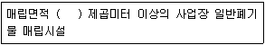
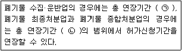
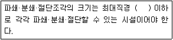

폐기물처리기사 (2021-05-15 기출문제)
1과목: 폐기물 개론
1. 폐기물 발생량의 결정 방법으로 적합하지 않은 것은?
- 발생량을 직접 추정하는 방법
- 도시의 규모가 커짐을 이용하여 추정하는 방법
- 주민의 수입 또는 매상고와 같은 이차적인 자료를 이용하여 추정하는 방법
- 원자재 사용으로부터 추정하는 방법
(정답률: 74%)

2. 쓰레기의 성상분석 절차로 가장 옳은 것은?
- 시료 → 전처리 → 물리적조성 분류 → 밀도측정 → 건조 → 분류
- 시료 → 전처리 → 건조 → 분류 → 물리적조성 분류 → 밀도측정
- 시료 → 밀도측정 → 건조 → 분류 → 전처리 → 물리적조성 분류
- 시료 → 밀도측정 → 물리적조성 분류 → 건조 → 분류 → 전처리
(정답률: 84%)
3. 다음의 폐기물 파쇄에너지 산정 공식을 흔히 무슨 법칙이라 하는가?

- 리팅거 (Rittinger) 법칙
- 본드(Bond) 법칙
- 킥(Kick) 법칙
- 로신(Rosin) 법칙
(정답률: 86%)
4. 적환장에 대한 설명으로 틀린 것은?
- 직접투하 방식은 건설비 및 운영비가 다른 방법에 비해 모두 적다.
- 저장투하 방식은 수거차의 대기시간이 직접투하방식 보다 길다.
- 직접저장투하 결합방식은 재활용품의 회수율을 증대시킬 수 있는 방법이다.
- 적환장의 위치는 해당지역의 발생 폐기물의 무게 중심에 가까운 곳이 유리하다.
(정답률: 77%)
5. 폐기물 선별과정에서 회전방식에 의해 폐기물을 크기에 따라 분리하는데 사용되는 장치는?
- Reciprocating Screen
- Air Classifier
- Ballistic Separator
- Trommel Screen
(정답률: 89%)
6. 페기물관리의 우선순위를 순서대로 나열한 것은?
- 에너지회수 - 감량화 - 재이용 - 재활용 - 소각 - 매립
- 재이용 - 재활용 - 감량화 - 에너지회수 - 소각 - 매립
- 감량화 - 재이용 - 재활용 - 에너지회수 - 소각 - 매립
- 소각 - 감량화 - 재이용 - 재활용 - 에너지회수 - 매립
(정답률: 85%)
7. 폐기물 차량 총중량이 24725kg, 공차량 중량이 13725kg이며, 적재함의 크기 L : 400cm, W : 250cm, H: 170cm일 때 차량 적재 계수(ton/m3)는?
- 0.757
- 0.708
- 0.687
- 0.647
(정답률: 81%)
8. 혐기성소화에 대한 설명으로 틀린 것은?
- 가수분해, 산생성, 메탄생성 단계로 구분된다.
- 처리속도가 느리고 고농도 처리에 적합하다.
- 호기성처리에 비해 동력비 및 유지관리비가 적게 든다.
- 유기산의 농도가 높을수록 처리효율이 좋아진다.
(정답률: 82%)
9. 폐기물의 수거노선 설정 시 고려해야 할 사항으로 가장 거리가 먼 것은?
- 언덕길은 내려가면서 수거한다.
- 발생량이 적으나 수거빈도가 동일하기를 원하는 곳은 같은 날 가장 먼저 수거한다.
- 가능한 한 지형지물 및 도로 경계와 같은 장벽을 사용하여 간선도로부근에서 시작하고 끝나도록 배치하여야 한다.
- 가능한 한 시계방향으로 수거노선을 정하며 U자형 회전은 피하여 수거한다.
(정답률: 80%)
10. 고형분 20%인 폐기물 10톤을 소각하기 위해 함수율이 15%가 되도록 건조시켰다. 이 건조폐기물의 중량(톤)은? (단, 비중은 1.0 기준)
- 약 1.8
- 약 2.4
- 약 3.3
- 약 4.3
(정답률: 80%)
11. 폐기물처리와 관련된 설명 중 틀린 것은?
- 지역사회 효과지수(CEI)는 청소상태 평가에 사용되는 지수이다.
- 컨테이너 철도수송은 광대한 지역에서 효율적으로 적용될 수 있는 방법이다.
- 폐기물수거 노동력을 비교하는 지표로서는 MHT(man/hr·ton)를 주로 사용한다.
- 직접저장투하 결합방식에서 일반 부패성 폐기물은 직접 상차 투입구로 보낸다.
(정답률: 83%)
12. 다음 중 지정폐기물에 해당하는 폐산 용액은?
- pH가 2.0 이상인 것
- pH가 12.5 이상인 것
- 염산농도가 0.001 M 이상인 것
- 황산농도가 0.0⑤ M 이상인 것
(정답률: 68%)
13. 인구 1천만명인 도시를 위한 쓰레기 위생 매립지(매립용량 100,000,000m3)를 계획하였다. 매립 후 폐기물의 밀도는 500kg/m3이고 복토량은 폐기물:복토 부피비율로 5:1이며 해당 도시 일인일일쓰레기발생량이 2kg일 경우 매립장의 수명(년)은?
- 5.7
- 6.8
- 8.3
- 14.6
(정답률: 63%)
14. 폐기물 발생량 예측방법 중 하나의 수식으로 쓰레기 발생량에 영향을 주는 각 인자들의 효과를 총괄적으로 나타내어 복잡한 시스템의 분석에 유용하게 사용할 수 있는 것은?
- 상관계수 분석모델
- 다중회귀 모델
- 동적모사 모델
- 경향법 모델
(정답률: 78%)
15. 폐기물의 관리목적 또는 폐기물의 발생량을 줄이기 위한 노력을 3R(또는 4R)이라고 줄여 말하고 있다. 이것에 해당하지 않는 것은?
- Remediation
- Recovery
- Reduction
- Reuse
(정답률: 82%)
16. 열분해에 영향을 미치는 운전인자가 아닌 것은?
- 운전 온도
- 가열 속도
- 폐기물의 성질
- 입자의 입경
(정답률: 66%)
17. 분뇨처리 결과를 나타낸 그래프의 ( )에 들어갈 말로 가장 알맞은 것은? (단, Se : 유출수의 휘발성 고형물질 농도(mg/L), So : 유입수의 휘발성 고형물질 농도(mg/L), SRT : 고형물질의 체류시간)

- 생물학적 분해 가능한 유기물질 분율
- 생물학적 분해 불가능한 휘발성 고형물질 분율
- 생물학적 분해 가능한 무기물질 분율
- 생물학적 분해 불가능한 유기물질 분율
(정답률: 74%)
18. 슬러지의 수분을 결합상태에 따라 구분한 것 중에서 탈수가 가장 어려운 것은?
- 내부수
- 간극모관결합수
- 표면부착수
- 간극수
(정답률: 83%)
19. 유해폐기물 성분물질 중 As에 의한 피해 증세로 가장 거리가 먼 것은?
- 무기력증 유발
- 피부염 유발
- Fanconi씨 증상
- 암 및 돌연변이 유발
(정답률: 78%)
20. 퇴비화 과정의 초기단계에서 나타나는 미생물은?
- Bacillus sp.
- Streptomyces sp.
- Aspergillus fumigatus
- Fungi
(정답률: 78%)
2과목: 폐기물 처리 기술
21. 0차 반응에 대한 설명 중 옳은 것은?
- 초기농도가 높으면 반감기가 짧다.
- 반응시간이 경과함에 따라 분해반응속도가 빨라진다.
- 초기농도의 높고 낮음에 관계없이 반감기가 일정하다.
- 반응시간이 경과해도 분해반응속도는 변하지 않고 일정하다.
(정답률: 60%)
22. 매립 시 폐기물 분해과정을 시간 순으로 옳게 나열한 것은?
- 호기성 분해 → 혐기성 분해 → 산성물질 생성 → 메탄 생성
- 혐기성 분해 → 호기성 분해 → 메탄 생성 → 유기산 형성
- 호기성 분해 → 유기산 생성 → 혐기성 분해 → 메탄 생성
- 혐기성 분해 → 호기성 분해 → 산성물질 생성 → 메탄 생성
(정답률: 68%)
23. 폐기물 매립지에서 사용하는 인공복토재의 특징이 아닌 것은?
- 독성이 없어야 한다.
- 가격이 저렴해야 한다.
- 투수계수가 높아야 한다.
- 악취발생량을 저감 시킬 수 있어야 한다.
(정답률: 76%)
24. 퇴비화 대상 유기물질의 화학식이 C99H148O59N 이라고 하면, 이 유기물질의 C/N비는?
- 64.9
- 84.9
- 104.9
- 124.9
(정답률: 72%)
25. 중유연소 시 발생한 황산화물을 탈황시키는 방법이 아닌 것은?
- 미생물에 의한 탈황
- 방사선에 의한 탈황
- 질산염 흡수에 의한 탈황
- 금속산화물 흡착에 의한 탈황
(정답률: 63%)
26. 활성탄 흡착법으로 처리하기 가장 어려울 것으로 예상되는 것은?
- 농약
- 알콜
- 유기할로겐화합물(HCCs)
- 다핵방향족탄화수소(PAHs)
(정답률: 59%)
27. 시멘트 고형화 방법 중 연소가스 탈황 시 발생된 슬러지 처리에 주로 적용되는 것은?
- 시멘트기초법
- 석회기초법
- 포졸란첨가법
- 자가시멘트법
(정답률: 60%)
28. 분뇨의 슬러지 건량은 3m3이며 함수율이 95%이다. 함수율을 80%까지 농축하면 농축조에서 분리액의 부피(m3)는? (단, 비중은 1.0이다.)
- 40
- 45
- 50
- 55
(정답률: 59%)
29. 유해폐기물 처리기술 중 용매추출에 대한 설명 중 가장 거리가 먼 것은?
- 액상 폐기물에서 제거하고자 하는 성분을 용매 쪽으로 흡수시키는 방법이다.
- 용매추출에 사용되는 용매는 점도가 높아야 하며 극성이 있어야 한다.
- 용매추출의 경제성을 좌우하는 가장 큰 인자는 추출을 위해 요구되는 용매의 양이다.
- 미생물에 의해 분해가 힘든 물질 및 활성탄을 이용하기에 농도가 너무 높은 물질 등에 적용가능성이 크다.
(정답률: 67%)
30. 매립을 위해 쓰레기를 압축시킨 결과 용적감소율이 60%였다면 압축비는?
- 2.5
- 5
- 7.5
- 10
(정답률: 71%)
31. 우리나라의 매립지에서 침출수 생성에 가장 큰 영향을 주는 인자는?
- 쓰레기 분해과정에서 발생하는 발생수
- 매립쓰레기 자체 수분
- 표토를 침투하는 강수
- 지하수 유입
(정답률: 73%)
32. 혐기소화과정의 가수분해단계에서 생성되는 물질과 가장 거리가 먼 것은?
- 아미노산
- 단당류
- 글리세린
- 알데하이드
(정답률: 55%)
33. 사용 종료된 폐기물 매립지에 대한 안정화 평가 기준항목으로 가장 거리가 먼 것은?
- 침출수의 수질이 2년 연속 배출허용기준에 적합하고 BOD/CODcr이 0.1 이하 일 것
- 매립폐기물 토사성분 중의 가연물 함량이 5% 미만이거나 C/N비가 10 이하일 것
- 매립가스 중 CH4농도가 5~15% 이내에 들 것
- 매립지 내부온도가 주변 지중온도와 유사할 것
(정답률: 48%)
34. 부식질(Humus) 의 특징으로 틀린 것은?
- 짙은 갈색이다.
- 뛰어난 토양 개량제이다.
- C/N비가 30~50 정도로 높다.
- 물 보유력과 양이온교환능력이 좋다.
(정답률: 67%)
35. 수위 40cm인 침출수가 투수계수 10-7cm/s, 두께 90cm인 점토층을 통과하는데 소요되는 시간(년)은?
- 11.7
- 19.8
- 28.5
- 64.4
(정답률: 51%)
36. 토양 속 오염물을 직접 분해하지 않고 보다 처리하기 쉬운 형태로 전환하는 기법으로 토양의 형태나 입경의 영향을 적게 받고 탄화수소계 물질로 인한 오염토양 복원에 효과적인 기술은?
- 용매추출법
- 열탈착법
- 토양증기추출법
- 탈할로겐화법
(정답률: 43%)
37. 침출수 집배수관의 종류 중 유공흄관에 관한 설명으로 옳은 것은?
- 관의 변형이 우려되는 곳에 적당하다.
- 지반의 침하에 어느 정도 적응할 수 있다.
- 경량으로 가공이 비교적 용이하고 시공성이 좋다.
- 소규모 처분장의 집수관으로 사용하는 경우가 많다.
(정답률: 47%)
38. 함수율 95% 분뇨의 유기탄소량이 TS의 35%, 총질소량은 TS의 10%이고 이와 혼합할 함수율 20%인 볏짚의 유기탄소량이 TS의 80%이고 총질소량이 TS의 4%라면, 분뇨와 볏짚을 무게비 2:1로 혼합했을 때 C/N비는? (단, 비중은 1.0, 기타 사항은 고려하지 않는다.)
- 16
- 18
- 20
- 22
(정답률: 49%)
39. 생활폐기물인 음식물쓰레기의 처리방법으로 가장 거리가 먼 것은?
- 감량 및 소멸화
- 사료화
- 호기성 퇴비화
- 고형화
(정답률: 65%)
40. 토양오염처리공법 중 토양증기추출법의 특징이 아닌 것은?
- 통기성이 좋은 토양을 정화하기 좋은 기술이다.
- 오염지역의 대수층이 깊을 경우 사용이 어렵다.
- 총 처리시간 예측이 용이하다.
- 휘발성, 준휘발성 물질을 제거하는데 탁월하다.
(정답률: 63%)
3과목: 폐기물 소각 및 열회수
41. 폐기물을 열분해 시킬 경우의 장점에 해당되지 않는 것은?
- 분해가스, 분해유 등 연료를 얻을 수 있다.
- 소각에 비해 저장이 가능한 에너지를 회수할 수 있다.
- 소각에 비해 빠른 속도로 폐기물을 처리할 수 있다.
- 신규 석탄이나 석유의 사용량을 줄일 수 있다.
(정답률: 62%)
42. 폐기물의 원소조성이 C 80%, H 10%, O 10%일 때 이론공기량(kg/kg)은?
- 8.3
- 10.3
- 12.3
- 14.3
(정답률: 53%)
43. 폐기물의 건조과정에서 함수율과 표면온도의 변화에 대한 설명으로 잘못된 것은?
- 폐기물의 건조방식은 쓰레기의 허용온도, 형태, 물리적 및 화학적 성질 등에 의해 결정된다.
- 수분을 함유한 폐기물의 건조과정은 예열건조기간 → 항율건조기간 → 감율건조기간 순으로 건조가 이루어진다.
- 항율건조기간에는 건조시간에 비례하여 수분감량과 함께 건조속도가 빨라진다.
- 감율건조기간에는 고형물의 표면온도 상승 및 유입되는 열량감소로 건조속도가 느려진다.
(정답률: 58%)
44. 하수처리장에서 발생하는 하수 Sludge류를 효과적으로 처리하기 위한 건조방법 중에서 직접열 또는 열풍건조 라고 불리는 전열방식은?
- 전도 전열방식
- 대류 전열방식
- 방사 전열방식
- 마이크로파 전열방식
(정답률: 51%)
45. 폐기물소각 시 발생되는 질소산화물 저감 및 처리방법이 아닌 것은?
- 알칼리 흡수법
- 산화 흡수법
- 접촉 환원법
- 디메틸아닐린법
(정답률: 53%)
46. 30ton/day의 폐기물을 소각한 후 남은 재는 전체 질량의 20%이다. 남은 재의 용적이 10.3m3일 때 재의 밀도(ton/m3)는?
- 0.32
- 0.58
- 1.45
- 2.30
(정답률: 60%)
47. 다단로 방식 소각로에 대한 설명으로 옳지 않은 것은?
- 신속한 온도반응으로 보조연료사용 조절이 용이하다.
- 다량의 수분이 증발되므로 수분함량이 높은 폐기물의 연소가 가능하다.
- 물리, 화학적으로 성분이 다른 각종 폐기물을 처리할 수 있다.
- 체류시간이 길어 휘발성이 적은 폐기물 연소에 유리하다.
(정답률: 52%)
48. 유동층 소각로의 장단점으로 틀린 것은?
- 가스의 온도가 높고 과잉공기량이 많다.
- 투입이나 유동화를 위해 파쇄가 필요하다.
- 유동매체의 손실로 인한 보충이 필요하다.
- 기계적 구동부분이 적어 고장율이 낮다.
(정답률: 54%)
49. 폐기물의 소각을 위해 원소분석을 한 결과, 가연성 폐기물 1kg당 C 50%, H 10%, O 16%, S 3%, 수분 10%, 나머지는 재로 구성된 것으로 나타났다. 이 폐기물을 공기비 1.1로 연소시킬 경우 발생하는 습윤연소가스량(Sm3/kg)은?
- 약 6.3
- 약 6.8
- 약 7.7
- 약 8.2
(정답률: 32%)
50. 1차 반응에서 1000초 동안 반응물의 1/2 이 분해되었다면 반응물이 1/10 남을 때까지 소요되는 시간(sec)은?
- 3923
- 3623
- 3323
- 3023
(정답률: 55%)
51. 연소에 있어 검댕이의 생성에 대한 설명으로 가장 거리가 먼 것은?
- A 중유 ＜ B중유 ＜ C중유 순으로 검댕이가 발생한다.
- 공기비가 매우 적을 때 다량 발생한다.
- 중합, 탈수소축합 등의 반응을 일으키는 탄화수소가 적을수록 검댕이는 많이 발생한다.
- 전열면 등으로 발열속도보다 방열속도가 빨라서 화염의 온도가 저하될 때 많이 발생한다.
(정답률: 50%)
52. 액체주입형 연소기에 관한 설명으로 가장 거리가 먼 것은?
- 구동장치가 없어서 고장이 적다.
- 하방점화방식의 경우에는 염이나 입상물질을 포함한 폐기물의 소각도 가능하다.
- 연소기의 가장 일반적인 형식은 수평 점화식이다.
- 버너노즐 없이 액체미립화가 용이하며, 대량처리에 주로 사용된다.
(정답률: 50%)
53. 폐기물 소각에 따른 문제점은 지구온난화 가스의 형성이다. 다음 배가스 성분 중 온실가스는?
- CO2
- NOx
- SO2
- HCl
(정답률: 59%)
54. 다음 중 연소실의 운전척도가 아닌 것은?
- 공기연료비
- 체류시간
- 혼합정도
- 연소온도
(정답률: 35%)
55. CH4 75%, CO2 5%, N2 8%, O2 12%로 조성된 기체연료 1 Sm3을 10Sm3의 공기로 연소할 때 공기비는?
- 1.22
- 1.32
- 1.42
- 1.52
(정답률: 38%)
56. 스토카식 도시폐기물 소각로에서 유기물을 완전연소시키기 위한 3T 조건으로 옳지 않은 것은?
- 혼합
- 체류시간
- 온도
- 압력
(정답률: 60%)
57. 로타리 킬른식 (rotary kiln)소각로의 특징에 대한 설명으로 틀린 것은?
- 습식가스 세정시스템과 함께 사용할 수 있다.
- 넓은 범위의 액상 및 고상 폐기물을 소각할 수 있다.
- 용융상태의 물질에 의하여 방해받지 않는다.
- 예열, 혼합, 파쇄 등 전처리 후 주입한다.
(정답률: 38%)
58. 쓰레기의 저위발열량이 4500 kcal/kg인 쓰레기를 연소할 때 불완전연소에 의한 손실이 10%, 연소 중의 미연손실이 5%일 때 연소효율(%)은?
- 80
- 85
- 90
- 95
(정답률: 51%)
59. 연소 배출 가스량이 5400 Sm3/hr인 소각시설의 굴뚝에서 정압을 측정하였더니 20mmH2O 였다. 여유율 20%인 송풍기를 사용할 경우 필요한 소요 동력(kW)은? (단, 송풍기 정압효율 80%, 전동기 효율 70%)
- 약 0.18
- 약 0.32
- 약 0.63
- 약 0.87
(정답률: 36%)
60. 폐기물의 연소 시 연소기의 부식원인이 되는 물질이 아닌 것은?
- 염소화합물
- PVC
- 황화합물
- 분진
(정답률: 43%)
4과목: 폐기물 공정시험기준(방법)
61. 용출시험 대상의 시료용액 조제에 있어서 사용하는 용매의 pH범위는?
- 4.8~5.3
- 5.8~6.3
- 6.8~7.3
- 7.8~8.3
(정답률: 57%)
62. 폐기물의 용출시험방법에 관한 사항으로 ( )에 옳은 내용은?

- 2시간
- 4시간
- 6시간
- 8시간
(정답률: 51%)
63. 대상폐기물의 양이 5400톤인 경우 채취해야 할 시료의 최소 수는?
- 20
- 40
- 60
- 80
(정답률: 48%)
64. 정량한계에 대한 설명으로 ( )에 옳은 것은?

- 2
- 5
- 10
- 20
(정답률: 49%)
65. 흡광광도 분석장치에서 근적외부의 광원으로 사용되는 것은?
- 텅스텐램프
- 중수소방전관
- 석영저압수은관
- 수소방전관
(정답률: 48%)
66. 이온전극법에 관한 설명으로 ( )에 옳은 내용은?

- 네른스트식
- 램버트식
- 페러데이식
- 플래밍식
(정답률: 42%)
67. 총칙의 용어 설명으로 옳지 않은 것은?
- 액상폐기물이라 함은 고형물의 함량이 5% 미만인 것을 말한다.
- 방울수라 함은 20℃에서 정제수 20방울을 적하할 때, 그 부피가 약 0.1mL 되는 것을 뜻한다.
- 시험조작 중 즉시란 30초 이내에 표시된 조작을 하는 것을 뜻한다.
- 고상폐기물이라 함은 고형물의 함량이 15% 이상인 것을 말한다.
(정답률: 55%)
68. 유기인의 분석에 관한 내용으로 틀린 것은?
- 기체크로마토그래피를 사용할 경우 질소인 검출기 또는 불꽃광도 검출기를 사용한다.
- 기체크로마토그래피는 유기인 화합물 중 이피엔, 파라티온, 메틸디메톤, 다이아지논 및 펜토에이트 분석에 적용된다.
- 시료채취는 유리병을 사용하며 채취 전 시료로 3회 이상 세척하여야 한다.
- 시료는 시료 채취 후 추출하기 전까지 4℃ 냉암소에 보관하고 7일 이내에 추출하고 40일 이내에 분석한다.
(정답률: 42%)
69. PCBs를 기체크로마토그래피로 분석할 때 실리카겔 칼럼에 무수황산나트륨을 첨가하는 이유는?
- 유분제거
- 수분제거
- 미량 중금속제거
- 먼지제거
(정답률: 49%)
70. ICP 원자발광분광기의 구성에 속하지 않은 것은?
- 고주파전원부
- 시료원자화부
- 광원부
- 분광부
(정답률: 26%)
71. 30% 수산화나트륨(NaOH)은 몇 몰(M)인가? (단, NaOH의 분자량 40)
- 4.5
- 5.5
- 6.5
- 7.5
(정답률: 40%)
72. 비소(자외선/가시선 분광법) 분석 시 발생되는 비화수소를 다이에틸다이티오카르바민산은의 피리딘용액에 흡수시키면 나타나는 색은?
- 적자색
- 청색
- 황갈색
- 황색
(정답률: 43%)
73. 다량의 점토질 또는 규산염을 함유한 시료에 적용되는 시료의 전처리 방법으로 가장 옳은 것은?
- 질산-과염소산-불화수소산 분해법
- 질산-염산 분해법
- 질산-과염소산 분해법
- 질산-황산 분해법
(정답률: 42%)
74. 0.08 N-HCl 70mL와 0.04 N-NaOH 수용액 130mL를 혼합했을 때 pH는? (단, 완전해리 된다고 가정)
- 2.7
- 3.6
- 5.6
- 11.3
(정답률: 25%)
75. 폐기물 중에 납을 자외선/가시선 분광법으로 측정하는 방법에 관한 내용으로 틀린 것은?
- 납 착염의 흡광도를 520nm에서 측정하는 방법이다.
- 전처리를 하지 않고 직접 시료를 사용하는 경우, 시료 중에 시안화합물이 함유되어 있으면 염산 산성으로 끓여 시안화물을 완전히 분해 제거한 다음 실험한다.
- 시료에 다량의 비스무트(Bi)가 공존하면 시안화칼륨용액으로 수회 씻어 무색으로 하여 실험한다.
- 정량한계는 0.001mg 이다.
(정답률: 36%)
76. 투사광의 강도가 10%일 때 흡광도(A10)와 20%일 때 흡광도(A20)를 비교한 설명으로 옳은 것은?
- A10는 A20보다 흡광도가 약 1.4배가 높다.
- A20는 A10보다 흡광도가 약 1.4배가 높다.
- A10는 A20보다 흡광도가 약 2.0배가 높다.
- A20는 A10보다 흡광도가 약 2.0배가 높다.
(정답률: 38%)
77. 수은을 원자흡수분광광도법으로 측정할 때 시료 중 수은을 금속수은으로 환원시키기 위해 넣는 시약은?
- 아연분말
- 황산나트륨
- 시안화칼륨
- 이염화주석
(정답률: 32%)
78. 기체크로마토그래피의 검출기 중인 또는 유황화합물을 선택적으로 검출할 수 있는 것으로 운반가스와 조연가스의 혼합부, 수소공급구, 연소노즐, 광학필터, 광전자증배관 및 전원 등으로 구성된 것은?
- TCD(Thermal Conductivity Detector)
- FID(Flame Ionization Detector)
- FPD(Flame Photometric Detector)
- FTD(Flame Thermionic Detector)
(정답률: 42%)
79. 비소를 자외선/가시선 분광법으로 측정할 때에 대한 내용으로 틀린 것은?
- 정량한계는 0.002mg 이다.
- 적자색의 흡광도를 530nm에서 측정한다.
- 정량범위는 0.002~0.01mg 이다.
- 시료 중의 비소에 아연을 넣어 3가 비소로 환원시킨다.
(정답률: 23%)
80. 다음 ( )에 들어갈 적절한 내용은?

- ㉠ 3, ㉡ 5~30, ㉢ ±3
- ㉠ 5, ㉡ 5~30, ㉢ ±5
- ㉠ 3, ㉡ 5~15, ㉢ ±3
- ㉠ 5, ㉡ 5~15, ㉢ ±5
(정답률: 38%)
5과목: 폐기물 관계 법규
81. 음식물류 폐기물 발생 억제 계획의 수립주기는?
- 1년
- 2년
- 3년
- 5년
(정답률: 45%)
82. 주변지역 영향 조사대상 폐기물처리시설의 기준으로 옳은 것은?

- 1만
- 3만
- 5만
- 15만
(정답률: 48%)
83. 위해의료폐기물 중 조직물류폐기물에 해당되는 것은?
- 폐혈액백
- 혈액투석 시 사용된 폐기물
- 혈액, 고름 및 혈액생성물(혈청, 혈장, 혈액제제)
- 폐항암제
(정답률: 50%)
84. 대통령령으로 정하는 폐기물처리시설을 설치, 운영하는 자는 그 시설의 유지관리에 관한 기술업무를 담당하게 하기 위해 기술관리인을 임명하거나 기술관리 능력이 있다고 대통령령으로 정하는 자와 기술관리 대행계약을 체결하여야 한다. 이를 위반하여 기술관리인을 임명하지 아니하고 기술관리 대행 계약을 체결하지 아니한 자에 대한 과태료 처분 기준은?
- 2백만원 이하의 과태료
- 3백만원 이하의 과태료
- 5백만원 이하의 과태료
- 1천만원 이하의 과태료
(정답률: 41%)
85. 제출된 폐기물 처리사업계획서의 적합통보를 받은 자가 천재지변이나 그 밖의 부득이한 사유로 정해진 기간 내에 허가신청을 하지 못한 경우에 실시하는 연장기간에 대한 설명으로 ( )의 기간이 옳게 나열된 것은?

- ㉠ 6개월, ㉡ 1년
- ㉠ 6개월, ㉡ 2년
- ㉠ 1년, ㉡ 2년
- ㉠ 1년, ㉡ 3년
(정답률: 35%)
86. 관리형 매립시설에서 발생하는 침출수의 배출허용기준(BOD-SS 순서)은? (단, 가 지역, 단위 mg/L)
- 30 - 30
- 30 - 50
- 50 - 50
- 50 - 70
(정답률: 48%)
87. 사업장에서 발생하는 폐기물 중 유해물질의 함유량에 따라 지정폐기물로 분류될 수 있는 폐기물에 대해서는 폐기물분석전문기관에 의뢰하여 지정폐기물에 해당되는지를 미리 확인하여야 한다. 이를 위반하여 확인하지 아니한 자에 대한 과태료 부과기준은?
- 200만원 이하
- 300만원 이하
- 500만원 이하
- 1000만원 이하
(정답률: 31%)
88. 폐기물관리법령상 용어의 정의로 틀린 것은?
- 폐기물 : 쓰레기, 연소재, 오니, 폐유, 폐산, 폐알칼리 및 동물의 사체 등으로서 사람의 생활이나 사업활동에 필요하지 아니하게 된 물질을 말한다.
- 폐기물처리시설 : 폐기물의 중간처분시설 및 최종처분시설 중 재활용처리시설을 제외한 환경부령으로 정하는 시설을 말한다.
- 지정폐기물 : 사업장폐기물 중 폐유·폐산 등 주변 환경을 오염시킬 수 있거나 의료폐기물 등 인체에 위해를 줄 수 있는 해로운 물질로서 대통령령으로 정하는 폐기물을 말한다.
- 폐기물감량화시설 : 생산 공정에서 발생하는 폐기물의 양을 줄이고, 사업장 내 재활용을 통하여 폐기물 배출을 최소화하는 시설로서 대통령령으로 정하는 시설을 말한다.
(정답률: 53%)
89. 지정폐기물의 수집·운반·보관기준에 관한 설명으로 옳은. 것은?
- 폐농약·폐촉매는 보관개시일부터 30일을 초과하여 보관하여서는 아니 된다.
- 수집·운반차량은 녹색도색을 하여야 한다.
- 지정폐기물과 지정폐기물 외의 폐기물을 구분 없이 보관하여야 한다.
- 폐유기용제는 휘발되지 아니하도록 밀폐된 용기에 보관하여야 한다.
(정답률: 46%)
90. 대통령령으로 정하는 폐기물처리시설을 설치, 운영하는 자는 그 처리시설에서 배출되는 오염물질을 측정하거나 환경부령으로 정하는 측정기관으로 하여금 측정하게 하고 그 결과를 환경부 장관에게 제출하여야 하는 데 이때 '환경부렁으로 정하는 측정기관'에 해당되지 않는 것은?
- 보건환경연구원
- 국립환경과학원
- 한국환경공단
- 수도권매립지관리공사
(정답률: 41%)
91. 폐기물 처리시설인 중간처분시설 중 기계적 처분시설의 종류로 틀린 것은?
- 절단시설(동력 7.5kW 이상인 시설로 한정한다.)
- 응집·침전 시설(동력 15kW 이상인 시설로 한정한다.)
- 압축시설(동력 7.5kW 이상인 시설로 한정한다.)
- 탈수·건조 시설
(정답률: 43%)
92. 기술관리인을 두어야 할 폐기물처리시설이 아닌 것은?
- 압축·파쇄·분쇄시설로서 1일 처분능력이 50톤 이상인 시설
- 사료화·퇴비화시설로서 1일 재활용능력이 5톤 이상인 시설
- 시멘트 소성로
- 소각열회수시설로서 시간당 재활용능력이 600킬로그램 이상인 시설
(정답률: 35%)
93. 폐기물발생억제지침 준수의무 대상 배출자의 규모기준으로 옳은 것은?
- 최근 2년간 연평균 배출량을 기준으로 지정폐기물을 100톤 이상 배출 하는 자
- 최근 2년간 연평균 배출량을 기준으로 지정폐기물을 200톤 이상 배출 하는 자
- 최근 3년간 연평균 배출량을 기준으로 지정폐기물을 100톤 이상 배출 하는 자
- 최근 3년간 연평균 배출량을 기준으로 지정폐기물을 200톤 이상 배출 하는 자
(정답률: 33%)
94. 폐기물 감량화 시설의 종류와 가장 거리가 먼 것은?
- 폐기물 재사용 시설
- 폐기물 재활용 시설
- 폐기물 재이용 시설
- 공정 개선 시설
(정답률: 39%)
95. 관할 구역의 폐기물의 배출 및 처리상황을 파악하여 폐기물이 적정하게 처리될 수 있도록 폐기물처리시설을 설치·운영하여야 하는 자는?
- 유역환경청장
- 폐기물 배출자
- 환경부장관
- 특별자치시장, 특별자치도지사, 시장·군수·구청장
(정답률: 39%)
96. 환경부장관, 시·도지사 또는 시장·군수·구청장은 관계 공무원에게 사무소나 사업장 등에 출입하여 관계 서류나 시설 또는 장비 등을 검사하게 할 수 있다. 이에 따른 보고를 하지 아니하거나 거짓 보고를 한자에 대한 과태료 기준은?
- 100만원 이하
- 200만원 이하
- 300만원 이하
- 500만원 이하
(정답률: 31%)
97. 지정폐기물 중 유해물질함유 폐기물의 종류로 틀린 것은? (단, 환경부령으로 정하는 물질을 함유한 것으로 한정한다.)
- 광재(철광 원석의 사용으로 인한 고로 슬래그는 제외한다.)
- 분진(대기오염 방지시설에서 포집된 것으로 한정하되, 소각시설에서 발생되는 것은 제외한다.)
- 폐흡착제 및 폐흡수제(광물유, 동물유 및 식물유의 정제에 사용된 폐토사는 제외한다.)
- 폐내화물 및 재벌구이 전에 유약을 바른 도자기 조각
(정답률: 23%)
98. 폐기물처리시설 설치승인신청서에 첨부하여야 하는 서류로 가장 거리가 먼 것은?
- 처분 또는 재활용 후에 발생하는 폐기물의 처분 또는 재활용계획서
- 처분대상 폐기물 발생 저감 계획서
- 폐기물 처분시설 또는 재활용시설의 설계도서(음식물류 폐기물을 처분 또는 재활용하는 시설인 경우에는 물질수지도를 포함한다.)
- 폐기물 처분시설 또는 재활용시설의 설치 및 장비·확보 계획서
(정답률: 25%)
99. 폐기물 처분시설의 설치기준에서 재활용시설의 경우 파쇄·분쇄·절단시설이 갖추어야 할 기준 으로 ( )에 맞은 것은?

- 3센티미터
- 5센티미터
- 10센티미터
- 15센티미터
(정답률: 21%)
100. 주변지역 영향 조사대상 폐기물처리시설 중 '대통령령으로 정하는 폐기물처리시설' 기준으로 옳지 않은 것은? (단, 폐기물처리업자가 설치, 운영)
- 시멘트 소성로(폐기물을 연료로 사용하는 경우로 한정한다.)
- 매립면적 3만 제곱미터 이상의 사업장 일반폐기물 매립시설
- 매립면적 1만 제곱미터 이상의 사업장 지정폐기물 매립시설
- 1일 처분능력이 50톤 이상인 사업장폐기물 소각시설(같은 사업장에 여러 개의 소각시설이 있는 경우에는 각 소각시설의 1일 처분 능력의 합계가 50톤 이상인 경우를 말한다.)
(정답률: 37%)